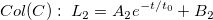
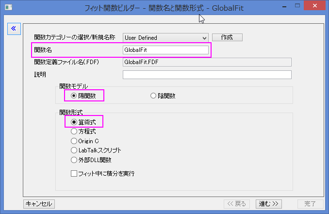
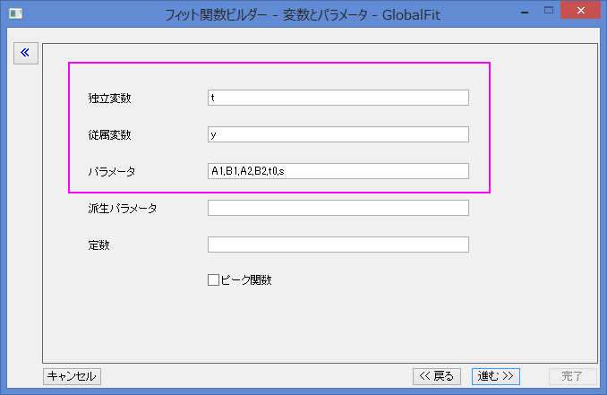
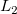
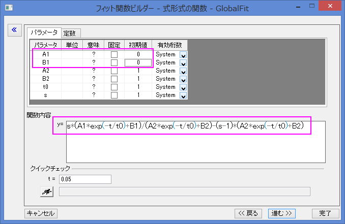
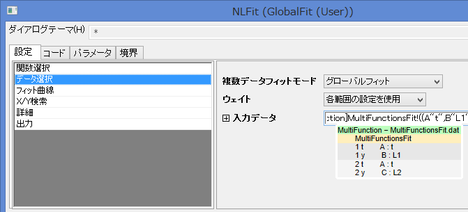
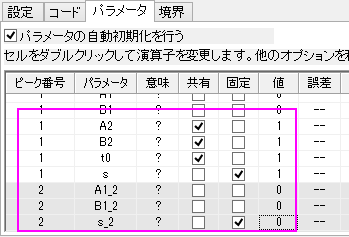
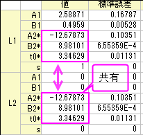

共有パラメータを使った異なる関数でのグローバルフィット
Multi-Functions-Global-Fitting
サマリー
このチュートリアルでは、次の問題を解決することを目的としています。それぞれのカーブに対して異なる関数を用い、2つまたはそれ以上の曲線に対して、グローバル曲線フィットを行う際に、いくつかのパラメーターを共有しようとすると、共有したパラメーターは全てのデータセットに共通となってしまいます。この問題は、異方性スペクトルのフィットなどの多種多様な科学分野に起こります。
必要なOriginのバージョン:Origin 2015 SR0
学習する項目
このチュートリアルでは、以下の項目について説明します。
- グローバルフィットを行うために、複数のデータセットを選択します。
- 全ての関数に繋がる切り替えパラメーターを設定します。
- 複数のフィット関数に共有されるパラメーターで、グローバルフィットを実行します。
ステップ
- 新規ワークブックボタン
 をクリックして、新規ワークブックを作成します。
をクリックして、新規ワークブックを作成します。
 ボタンをクリックして、<Origin EXE Folder>\Samples\Curve Fitting\フォルダの、MultiFunctionsFit.datファイルをインポートします。
ボタンをクリックして、<Origin EXE Folder>\Samples\Curve Fitting\フォルダの、MultiFunctionsFit.datファイルをインポートします。- 列A、列Bと列Ｃを選択し、メニューから解析：フィット：非線形曲線フィットと操作してNLFitダイアログを開きます。
次の3つのステップで、ユーザー定義のフィット関数を作成します。その関数は、次の数量的モデルを元に構築されます。
:\;L_1=\frac{A_1e^{-t/t_0}+B_1}{A_2e^{-t/t_0}+B_2}")

- 関数選択ページで、User DefinedカテゴリからH＜新規..＞関数を選択します。
- 関数名に"GlobalFit" と入力し、関数モデルと関数形式を次の図のように設定します。

進むをクリックし、変数とパラメータの設定ページに移動します。
- 変数とパラメータを、下の図のように設定します。

次に、進む をクリックし、式形式の関数ページに移動します。
- 関数内容のボックスにある
 と
と 
の関数式を含む式形式を入力します。
s*(A1*exp(-t/t0)+B1)/(A2*exp(-t/t0)+B2)-(s-1)*(A2*exp(-t/t0)+B2)
The parameter s is a switch for global fitting, if s=1, the is used for fitting, if s=0, が、フィット計算に使われます。s の値は次のフィット手順で制御されます。A1とB1の初期値を設定します。そして、OKをクリックします。

- NLFit ダイアログに戻り、Use DefinedカテゴリのGlobalFit関数を選択します。データ選択ページに移動し、複数データフィットモードのドロップダウンリストからグローバルフィットを選択します。

- パラメータタブに移動し、A2とB、t0の共有のチェックボックスにチェックを入れ、s と s_2 の固定のボックスにチェックを入れ、それぞれに1 と0を入力します。sの設定では、を利用してC列をフィットしながら、を使ってB列をフィット制御します。

- フィットボタンをクリックして、フィットを実行します。結果シートのパラメータ表でフィット結果を確認できます。

- グラフの元データプロットに、フィット曲線が追加されます。B列のフィット曲線 と、C列のフィット曲線はGlobalFit (User) Fit of Multiple Dataset のグラフをダブルクリックすると確認することが出来ます。